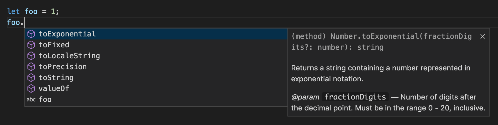
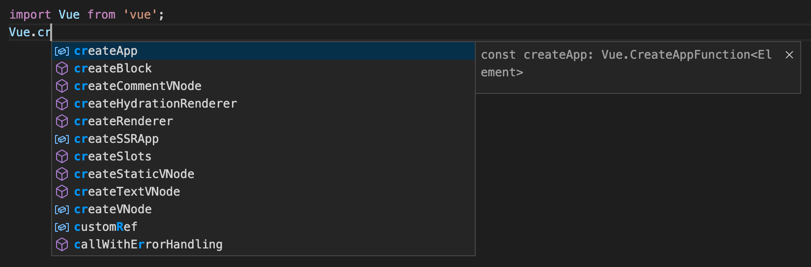
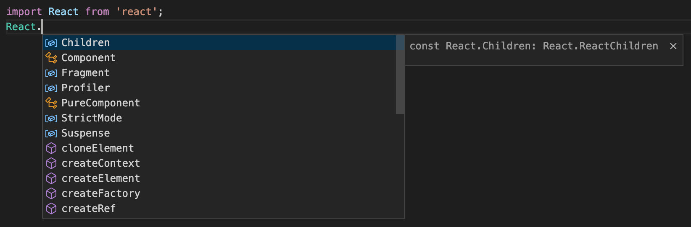

什么是 TypeScript
Typed JavaScript at Any Scale.
添加了类型系统的 JavaScript，适用于任何规模的项目。
以上描述是官网[1]对于 TypeScript 的定义。
它强调了 TypeScript 的两个最重要的特性——类型系统、适用于任何规模。
TypeScript 的特性§
类型系统§
从 TypeScript 的名字就可以看出来，「类型」是其最核心的特性。
我们知道，JavaScript 是一门非常灵活的编程语言：
- 它没有类型约束，一个变量可能初始化时是字符串，过一会儿又被赋值为数字。
- 由于隐式类型转换的存在，有的变量的类型很难在运行前就确定。
- 基于原型的面向对象编程，使得原型上的属性或方法可以在运行时被修改。
- 函数是 JavaScript 中的一等公民[2]，可以赋值给变量，也可以当作参数或返回值。
这种灵活性就像一把双刃剑，一方面使得 JavaScript 蓬勃发展，无所不能，从 2013 年开始就一直蝉联最普遍使用的编程语言排行榜冠军[3]；另一方面也使得它的代码质量参次不起，维护成本高，运行时错误多。
而 TypeScript 的类型系统，在很大程度上弥补了 JavaScript 的缺点。
TypeScript 是静态类型§
类型系统按照「类型检查的时机」来分类，可以分为动态类型和静态类型。
动态类型是指在运行时才会进行类型检查，这种语言的类型错误往往会导致运行时错误。JavaScript 是一门解释型语言[4]，没有编译阶段，所以它是动态类型，以下这段代码在运行时才会报错：
let foo = 1;
foo.split(' ');
// Uncaught TypeError: foo.split is not a function
// 运行时会报错（foo.split 不是一个函数），造成线上 bug
静态类型是指编译阶段就能确定每个变量的类型，这种语言的类型错误往往会导致语法错误。TypeScript 在运行前需要先编译为 JavaScript，而在编译阶段就会进行类型检查，所以 TypeScript 是静态类型，这段 TypeScript 代码在编译阶段就会报错了：
let foo = 1;
foo.split(' ');
// Property 'split' does not exist on type 'number'.
// 编译时会报错（数字没有 split 方法），无法通过编译
你可能会奇怪，这段 TypeScript 代码看上去和 JavaScript 没有什么区别呀。
没错！大部分 JavaScript 代码都只需要经过少量的修改（或者完全不用修改）就变成 TypeScript 代码，这得益于 TypeScript 强大的[类型推论][]，即使不去手动声明变量 foo 的类型，也能在变量初始化时自动推论出它是一个 number 类型。
完整的 TypeScript 代码是这样的：
let foo: number = 1;
foo.split(' ');
// Property 'split' does not exist on type 'number'.
// 编译时会报错（数字没有 split 方法），无法通过编译
TypeScript 是弱类型§
类型系统按照「是否允许隐式类型转换」来分类，可以分为强类型和弱类型。
以下这段代码不管是在 JavaScript 中还是在 TypeScript 中都是可以正常运行的，运行时数字 1 会被隐式类型转换为字符串 '1'，加号 + 被识别为字符串拼接，所以打印出结果是字符串 '11'。
console.log(1 + '1');
// 打印出字符串 '11'
TypeScript 是完全兼容 JavaScript 的，它不会修改 JavaScript 运行时的特性，所以它们都是弱类型。
作为对比，Python 是强类型，以下代码会在运行时报错：
print(1 + '1')
# TypeError: unsupported operand type(s) for +: 'int' and 'str'
若要修复该错误，需要进行强制类型转换：
print(str(1) + '1')
# 打印出字符串 '11'
强/弱是相对的，Python 在处理整型和浮点型相加时，会将整型隐式转换为浮点型，但是这并不影响 Python 是强类型的结论，因为大部分情况下 Python 并不会进行隐式类型转换。相比而言，JavaScript 和 TypeScript 中不管加号两侧是什么类型，都可以通过隐式类型转换计算出一个结果——而不是报错——所以 JavaScript 和 TypeScript 都是弱类型。
虽然 TypeScript 不限制加号两侧的类型，但是我们可以借助 TypeScript 提供的类型系统，以及 ESLint 提供的代码检查功能，来限制加号两侧必须同为数字或同为字符串[5]。这在一定程度上使得 TypeScript 向「强类型」更近一步了——当然，这种限制是可选的。
这样的类型系统体现了 TypeScript 的核心设计理念[6]：在完整保留 JavaScript 运行时行为的基础上，通过引入静态类型系统来提高代码的可维护性，减少可能出现的 bug。
适用于任何规模§
TypeScript 非常适用于大型项目——这是显而易见的，类型系统可以为大型项目带来更高的可维护性，以及更少的 bug。
在中小型项目中推行 TypeScript 的最大障碍就是认为使用 TypeScript 需要写额外的代码，降低开发效率。但事实上，由于有[类型推论][]，大部分类型都不需要手动声明了。相反，TypeScript 增强了编辑器（IDE）的功能，包括代码补全、接口提示、跳转到定义、代码重构等，这在很大程度上提高了开发效率。而且 TypeScript 有近百个[编译选项][]，如果你认为类型检查过于严格，那么可以通过修改编译选项来降低类型检查的标准。
TypeScript 还可以和 JavaScript 共存。这意味着如果你有一个使用 JavaScript 开发的旧项目，又想使用 TypeScript 的特性，那么你不需要急着把整个项目都迁移到 TypeScript，你可以使用 TypeScript 编写新文件，然后在后续更迭中逐步迁移旧文件。如果一些 JavaScript 文件的迁移成本太高，TypeScript 也提供了一个方案，可以让你在不修改 JavaScript 文件的前提下，编写一个[类型声明文件][]，实现旧项目的渐进式迁移。
事实上，就算你从来没学习过 TypeScript，你也可能已经在不知不觉中使用到了 TypeScript——在 VSCode 编辑器中编写 JavaScript 时，代码补全和接口提示等功能就是通过 TypeScript Language Service 实现的[7]：

一些第三方库原生支持了 TypeScript，在使用时就能获得代码补全了，比如 Vue 3.0[8]：

有一些第三方库原生不支持 TypeScript，但是可以通过安装社区维护的类型声明库[9]（比如通过运行 npm install --save-dev @types/react 来安装 React 的类型声明库）来获得代码补全能力——不管是在 JavaScript 项目中还是在 TypeScript 中项目中都是支持的：

由此可见，TypeScript 的发展已经深入到前端社区的方方面面了，任何规模的项目都或多或少得到了 TypeScript 的支持。
与标准同步发展§
TypeScript 的另一个重要的特性就是坚持与 ECMAScript 标准[10]同步发展。
ECMAScript 是 JavaScript 核心语法的标准，自 2015 年起，每年都会发布一个新版本，包含一些新的语法。
一个新的语法从提案到变成正式标准，需要经历以下几个阶段：
- Stage 0：展示阶段，仅仅是提出了讨论、想法，尚未正式提案。
- Stage 1：征求意见阶段，提供抽象的 API 描述，讨论可行性，关键算法等。
- Stage 2：草案阶段，使用正式的规范语言精确描述其语法和语义。
- Stage 3：候选人阶段，语法的设计工作已完成，需要浏览器、Node.js 等环境支持，搜集用户的反馈。
- Stage 4：定案阶段，已准备好将其添加到正式的 ECMAScript 标准中。
一个语法进入到 Stage 3 阶段后，TypeScript 就会实现它。一方面，让我们可以尽早的使用到最新的语法，帮助它进入到下一个阶段；另一方面，处于 Stage 3 阶段的语法已经比较稳定了，基本不会有语法的变更，这使得我们能够放心的使用它。
除了实现 ECMAScript 标准之外，TypeScript 团队也推进了诸多语法提案，比如可选链操作符（?.）[11]、空值合并操作符（??）[12]、Throw 表达式[13]、正则匹配索引[14]等。
总结§
什么是 TypeScript？
- TypeScript 是添加了类型系统的 JavaScript，适用于任何规模的项目。
- TypeScript 是一门静态类型、弱类型的语言。
- TypeScript 是完全兼容 JavaScript 的，它不会修改 JavaScript 运行时的特性。
- TypeScript 可以编译为 JavaScript，然后运行在浏览器、Node.js 等任何能运行 JavaScript 的环境中。
- TypeScript 拥有很多编译选项，类型检查的严格程度由你决定。
- TypeScript 可以和 JavaScript 共存，这意味着 JavaScript 项目能够渐进式的迁移到 TypeScript。
- TypeScript 增强了编辑器（IDE）的功能，提供了代码补全、接口提示、跳转到定义、代码重构等能力。
- TypeScript 拥有活跃的社区，大多数常用的第三方库都提供了类型声明。
- TypeScript 与标准同步发展，符合最新的 ECMAScript 标准（stage 3）。
附：TypeScript 的发展历史§
- 2012-10：微软发布了 TypeScript 第一个版本（0.8），此前已经在微软内部开发了两年。
- 2014-04：TypeScript 发布了 1.0 版本。
- 2014-10：Angular 发布了 2.0 版本，它是一个基于 TypeScript 开发的前端框架。
- 2015-01：ts-loader 发布，webpack 可以编译 TypeScript 文件了。
- 2015-04：微软发布了 Visual Studio Code，它内置了对 TypeScript 语言的支持，它自身也是用 TypeScript 开发的。
- 2016-05：
@types/react发布，TypeScript 可以开发 React 应用了。 - 2016-05：
@types/node发布，TypeScript 可以开发 Node.js 应用了。 - 2016-09：TypeScript 发布了 2.0 版本。
- 2018-06：TypeScript 发布了 3.0 版本。
- 2019-02：TypeScript 宣布由官方团队来维护 typescript-eslint，以支持在 TypeScript 文件中运行 ESLint 检查。
- 2020-05：Deno 发布了 1.0 版本，它是一个 JavaScript 和 TypeScript 运行时。
- 2020-08：TypeScript 发布了 4.0 版本。
- 2020-09：Vue 发布了 3.0 版本，官方支持 TypeScript。